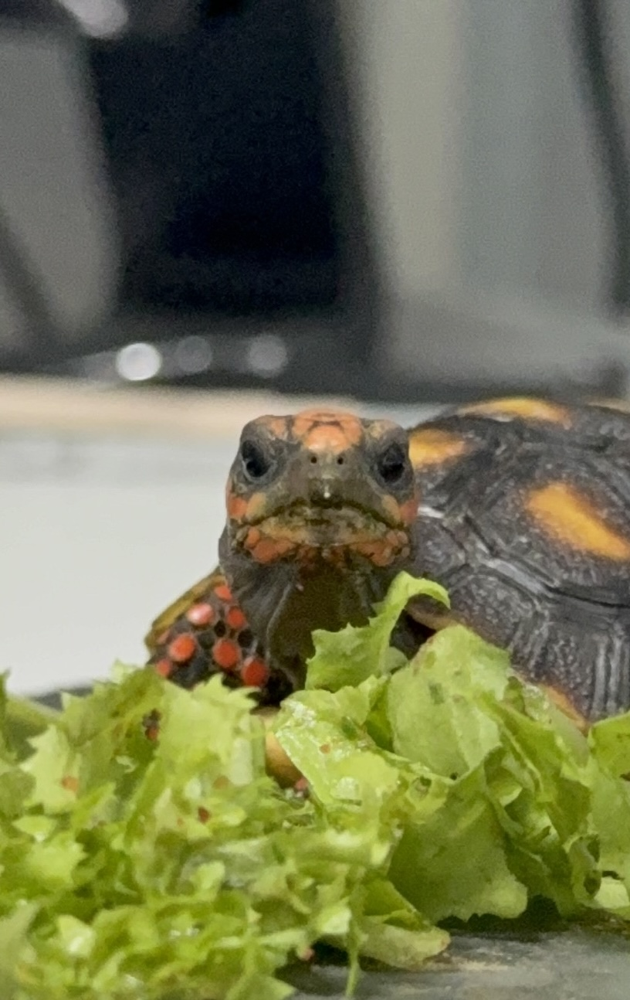

육지를 처음 만난 날.
tortoise diary
육지육지 가족 의 일상
작고 느리지만, 하루하루 무럭무럭 🌿
🍃

김육지
Testudo marginata · 드워프 마지나타
입양일
—
현재 몸무게
— g
먹이
—
사육 환경
—
🌱 몸무게 변화
데이터 불러오는 중…
📖 히스토리
-
26.02.01.
입양
-
26.03.14.
청소
바닥제를 교체/청소 후, 적응을 못함.
-
26.03.31.
성장
50g 돌파. 무럭무럭
-
26.07.02.
성장
100g 돌파. 무럭무럭
-
26.07.13.
호텔링
해외 출장으로 일주일(13-19) 간 호텔링
-
26.08.01.
건강검진
첫 건강검진(X-ray, 분변검사 등
📷 갤러리
갤러리 불러오는 중…

김체리
Chelonoidis carbonarius · 체리헤드 레드풋
입양일
—
현재 몸무게
— g
먹이
—
사육 환경
—
🌱 몸무게 변화
데이터 불러오는 중…
📖 히스토리
-
26.07.29.
입양
체리를 처음 만난 날.
📷 갤러리
갤러리 불러오는 중…